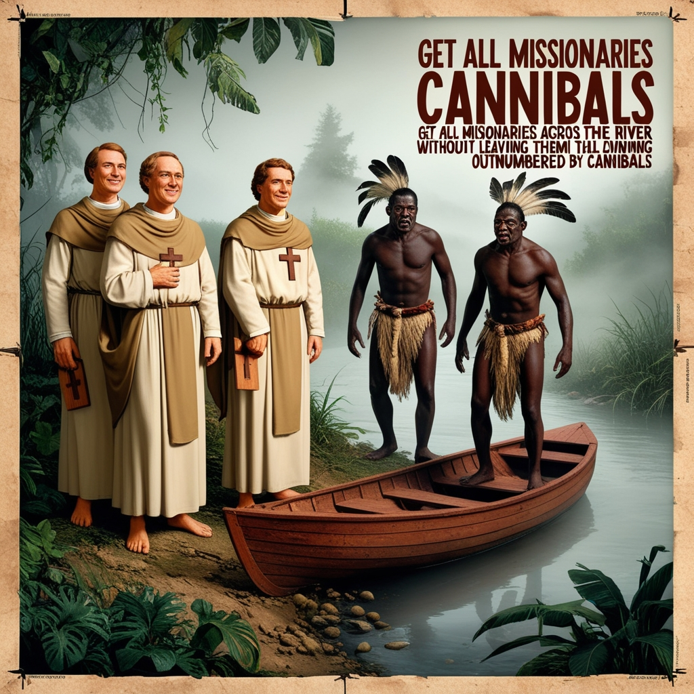

★ ★ ★ MISSIONARY AND CANNIBIALS LOGIC GAME
★ ★ ★

★ The Missionaries and Cannibals problem is a classic puzzle that involves a group of missionaries and cannibals
trying to cross a river using a boat. The puzzle is often used to demonstrate problem-solving techniques
particularly in algorithms and artificial intelligence.
★ CONSTRAINS OF THIS GAME ★
- At any time, missionaries must never be outnumbered by cannibals on either side of the river,
because the cannibals would eat the missionaries.
- The boat can carry at most two people at a time.
- The boat can be rowed by either one or two people, but the boat must always be rowed back by someone.
★ GAME FLOW ★
- Initial Setup:
- There are 3 missionaries and 3 cannibals on the left bank of the river.
- The boat can carry up to 2 people at a time.
- The goal is to move all 3 missionaries and 3 cannibals to the right side of the river without violating the rules.
- Game Rules:
- If at any time the number of cannibals exceeds the number of missionaries on either side of the river,
the cannibals will "eat" the missionaries, and the player loses the game.
- The boat cannot travel with no people on board.
- Players can move missionaries and/or cannibals back and forth.
- Player Interaction:
- The player is asked to input how many missionaries and cannibals to move at each step.
- The program checks if the move is valid (i.e., not exceeding the boat's capacity and ensuring no side of the river has more cannibals than missionaries.
- Winning and Losing Conditions:
- The game is won when all the missionaries and cannibals have successfully crossed to the right bank.
- The game is lost if the cannibals outnumber the missionaries on either side of the river during any move.
- Invalid Inputs:
If the player enters invalid input like trying to move too many people or a negative number, they will be asked to re-enter the values.